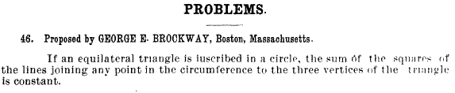

Problema 282
2) Si un triángulo equilátero está inscrito en una circunferencia, la suma de los cuadrados de los segementos que unen cualquier punto de la circunferencia a los tres vértices del triángulo es constante.
Brockway, G. E. (1895): American Mathematical Monthly, (Volumen II, May) p. 158
